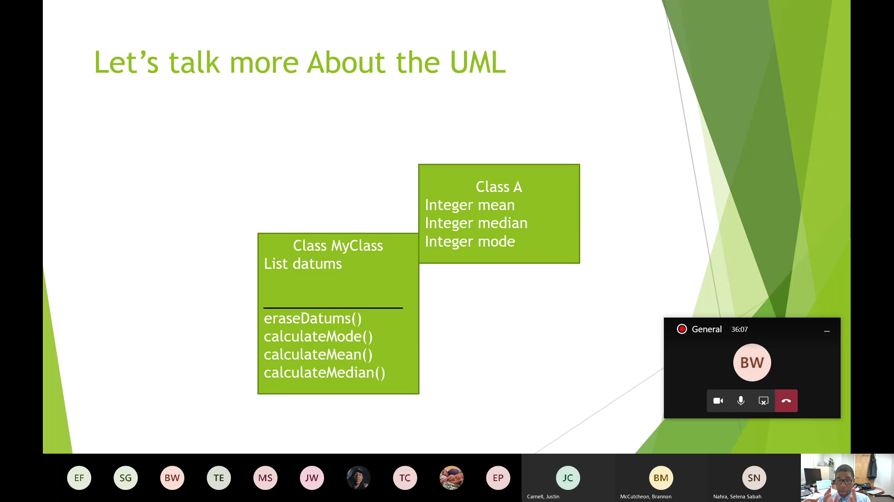

Jonathan A. Saddler, Ph. D.
East Carolina University
Selected Topics
UML Diagrams
With the introduction of higher level concepts such as classes and methods came the need to bring in abstractions of these concepts without jumping into real code first. For its ease and simplicity in introducing classes and their related variables, UML (the Unified Modeling Language) was introduced very early in the course (week 2), alongside the three program design paradigms discussed in this course.
Discussion of the concepts behind UML were held until the tail end of the course, once basic computation had been covered in detail. Just before reviewing basic access control of variables and subprocedures, we reintroduced UML for the sole purpose of giving students an understanding of how variables tend to be related to the intent of their classes in Object Oriented Programming.
-
State Machines Compared to UML

-
UML's were first introduced for their ability to capture class information in a unique, simple manner.
To help rein in whether the UML design model can be considered appropriate for every situation, we in class, discussed things to look for that might help identify a problems better expressed via UML, such as when we need to understand implementation details in order to implement a system.
-
Introducing Subprocedures
 -
We covered in a number of lectures and examples linking access control of variables in Java to the symbols used in UML diagrams. Working again by example, students were introduced to the concept in slides, given a "fake assignment" that walked through their proper use, then given a real assignment that helped uncover whether students were retaining UML principles.
Based on this experience, introducing variables this way was met with a few rough spots when it came to programming, as exercises covering methods came at the tail end of a fast-paced course. However, the separation of whether students understood the purpose of designing classes and variables with the intent to work with one another and controls to block unnecessary access, was tested, and also seemed to be done successfully.